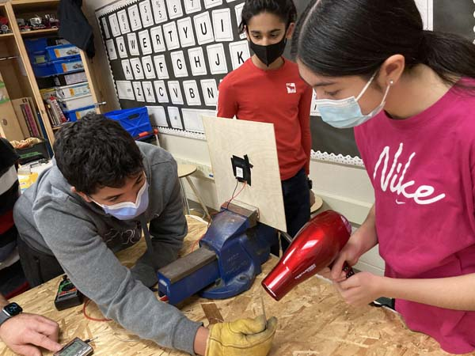
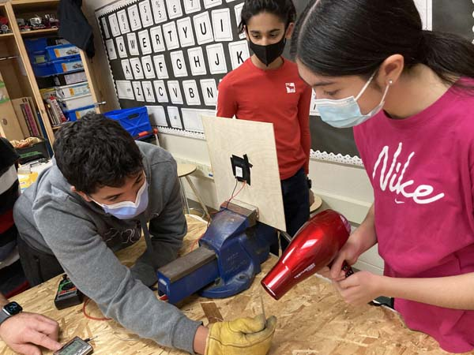

Climate change is causing potentially irreversible damage to our environment, with 1.2 trillion tons of polar ice melting yearly, resulting in over 200 million people losing their homes by 2050. As stewards of the planet, it is our responsibility to act now and reduce our production of harmful CO2. We must take immediate action to capture energy from exhausted waste heat and direct it to purposes that would otherwise require energy from the grid. We need to be efficient with our energy use to ensure that we sustain the planet that sustains us and future generations.
We have both a working prototype and a 3D CAD drawing of the Z-Pipe. We refined our Z-Pipe
with 4 different prototypes to ensure that the maximum temperature differential was achieved.
We went from an initial prototype with 1 TEG to our final prototype with 9. We added a voltage
converter to boost our 3.5-volt output to 5.0 volts and added a USB cable to allow the Z-Pipe to
charge a mobile phone. The prototype allowed us to validate its performance under realistic conditions.
To help others understand the Z-Pipe, we posted a video of our final prototype to our website and
shared it with our 88 survey respondents.
We surveyed 88 adults in order to gauge the demand for the Z-Pipe. We received many positive comments from our survey, along with a few inquiries, such as: Is the Z-Pipe is suitable for other purposes (e.g., dryer exhaust vents)? What effect does extreme weather have on the Z-Pipe?

We used Tinkercad CAD software to create a 3D model of our prototype. This representation helps people to better understand our invention by viewing the Z-Pipe from different angles, providing a clearer representation of its design.


 

We performed a global patent search to investigate existing solutions. Our Z-Pipe is different because the electricity generated is used to charge mobile devices or batteries, unlike another TEG innovation which uses electricity generated to power a furnace during a blackout. The Z-Pipe is superior to existing waste heat captors because it is easy to install, long-lasting, and inexpensive.
Ctrl-Z estimated the cost to produce the Z-Pipe, market demand volume and selling price per unit in developing base case financial projections for the Z-Pipe which provide strong indication that Z-Pipe can be a viable and profitable business.
Initially, we are planning to sell the Z-Pipe to Canadian heating contractors for $149.99, who will, in turn, sell them to homeowners. When the heating contractors meet with their customers to install a new furnace, they can sell the Z-Pipe as a part of the homeowners heating solution. In addition, offering a sales commission to the heating contractors should motivate them to sell our Z-Pipe to their customers. Since the Z-Pipe contains no moving parts, it will be maintenance-free. In the unlikely situation that the Z-Pipe fails, the heating contractor can either repair it or return it to us for replacement. As the heating contractors are keen to sell products to homeowners and are licensed for heating installation, they will be well positioned to also sell Z-Pipes. The heating contractors can also install it on the furnace exhaust since they are familiar with how home heating systems work. We would not work with furnace manufacturers directly because, while the Z-Pipe uses furnace waste heat to generate electricity, it is not a direct component of the furnace.
Based on our financial projections for the residential application of the Z-Pipe, we have determined that it can be a viable business, with an estimated value of $11.5 million. We conservatively estimate that the Z-Pipe will be profitable in year 1, and by year 7, $14.5 million of cumulative net income will have been generated on revenues of $36.7 million. Our financial projections are comprehensive and include material costs, shipping costs, salaries, rental costs, insurance, taxes, advertising, and sales commissions. Our projections have been discussed with a Boston Consulting Group Climate Tech Business Strategy Consultant, Mr. Youssef Aroub, who said that the market for the Z-Pipe is huge.